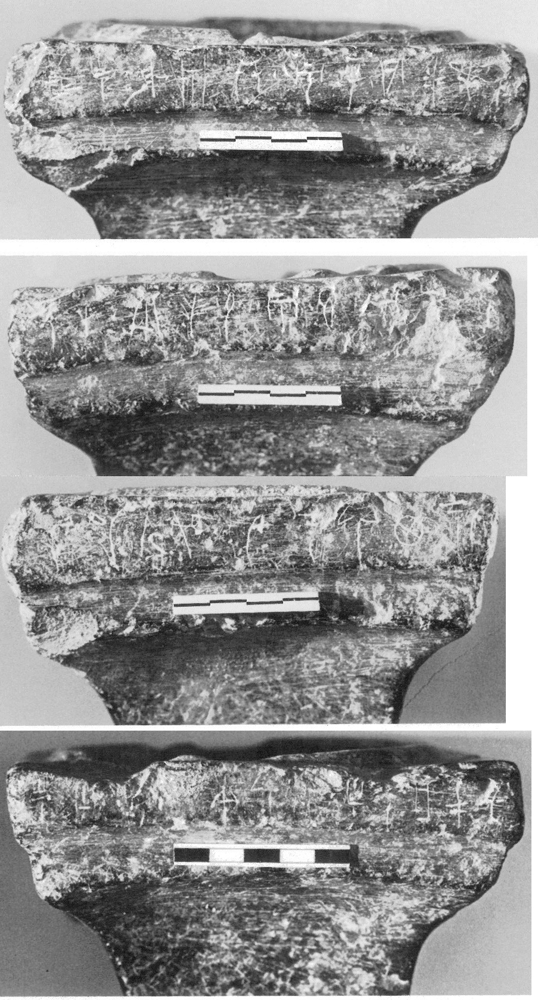
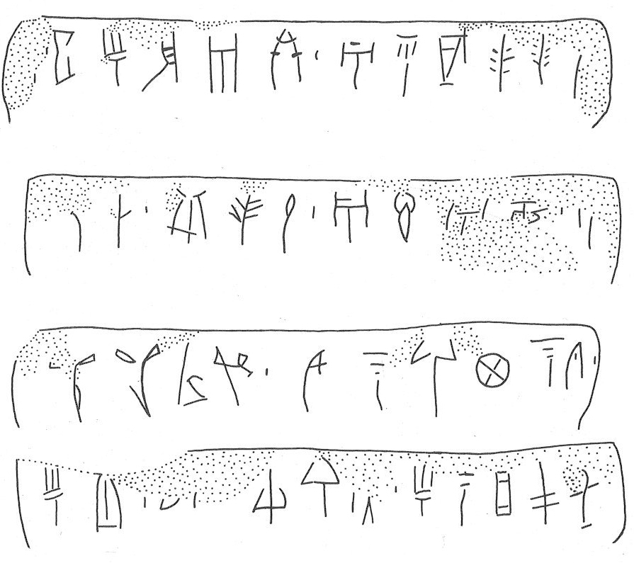

-
PKZa11
Names
PKZa11, PK Za 11
Support
Stone vessel
Location
Palaikastro
Findspot
Unavailable


Scribe
Unavailable
Context
Unavailable
Dimensions
Catalogue
Readings
1 1 0 A none
1 1 0 TA none
1 1 0 I none
1 1 0 *301 none
1 1 0 WA none
1 1 0 E none
1 1 1 *900 none
1 1 2 A none
1 1 2 DI none
1 1 2 KI none
1 1 2 TE none
1 1 2 TE none
1 1 3 *900 none
1 2 4 *900 none
2 2 5 RE none
2 2 6 *900 none
2 2 7 PI none
2 2 7 TE none
2 2 7 RI none
2 2 8 *900 none
2 2 9 A none
2 2 9 KO none
2 2 9 A none
2 2 9 NE none
2 2 10 *900 none
2 2 11 A none
3 3 12 SA none
3 3 12 SA none
3 3 12 RA none
3 3 12 ME none
3 3 13 *900 none
3 3 14 U none
3 3 14 NA none
3 3 14 RU none
3 3 14 KA none
3 3 14 NA none
3 3 14 TI none
3 3 15 *900 none
4 4 16 I none
4 4 16 PI none
4 4 16 NA none
4 4 16 MI none
4 4 16 NA none
4 4 17 SI none
4 4 17 RU none
4 4 18 *900 none
4 4 19 *900 none
4 4 20 I none
4 4 20 NA none
4 4 20 JA none
4 4 20 PA none
4 4 20 QA none
𐘇𐘳𐘚𐙕𐘮𐘡𐄁𐘇𐘆𐘸𐘃𐘃𐄁𐄁
𐘙𐄁𐘢𐘃𐘭𐄁𐘇𐘺𐘇𐘗𐄁𐘇
𐘞𐘞𐘴𐘋𐄁𐘉𐘅𐘘𐘾𐘅𐘠𐄁
𐘚𐘢𐘅𐘻𐘅𐘤𐘘𐄁𐄁𐘚𐘅𐘱𐘂𐘌
ATAI*301WAE*900ADIKITETE*900*900
RE*900PITERI*900AKOANE*900A
SASARAME*900UNARUKANATI*900
IPINAMINASIRU*900*900INAJAPAQA
𐘇𐘳𐘚𐙕𐘮𐘡𐄁𐘇𐘆𐘸𐘃𐘃𐄁
𐄁𐘙𐄁𐘢𐘃𐘭𐄁𐘇𐘺𐘇𐘗𐄁𐘇
𐘞𐘞𐘴𐘋𐄁𐘉𐘅𐘘𐘾𐘅𐘠𐄁
𐘚𐘢𐘅𐘻𐘅𐘤𐘘𐄁𐄁𐘚𐘅𐘱𐘂𐘌
ATAI*301WAE*900ADIKITETE*900
*900RE*900PITERI*900AKOANE*900A
SASARAME*900UNARUKANATI*900
IPINAMINASIRU*900*900INAJAPAQA
PK Za
11
(HM 1341) (GORILA IV: 32-34), square Libation Table, serpentine;
Bosanquet &
Dawkins,
1923, 143, no. 4) (probably
Petsophas)
a:
A
-TA-I-*301-WA-E
•
A-DI-KI-TE-TE-[•
b:
•]-
RE
• PI-TE-
RI
• A-KO-
A
-
NE
•
A
-
c: SA-SA-RA-ME • U-NA-RU-KA-NA-TI •
d:
I-PI-
NA
-
MI
-
NA
[ ] SI-RU-[•]
•
I-NA-JA-PA-QA
a: GORILA says, "the
last sign could be
KI
,
U
, or
DU
.
b: JGY: The
first sign cannot be PU
2
, but PU is not
impossible; the second
sign, according to the photograph (p. 32), is
probably RE (GORILA reads
DA
). Thus, the word should more likely
be:
A-DI-KI-TE-TE-
DU
-
PU
-
RE
d: GORILA:
"SI-RU-
DU
is not excluded." But (JGY) it
should be TE; the forked
"legs" of what GORILA sees as possibly DU
look very faint on the
photograph (p. 33), more like scratches.
Commentary © John Younger
References
papers/GORILA-Vol4.pdf#page=74